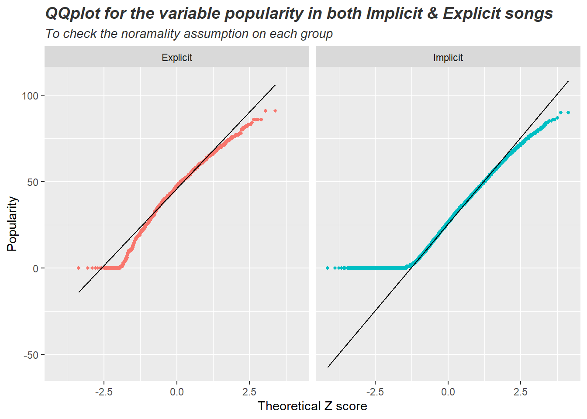
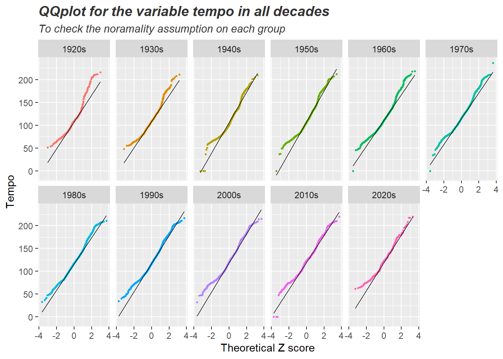

פרק 10 - משתנים מקריים והתפלגויות
10.1 התפלגות גיאומטרית
וקטור של ערכים מתוך התפלגות גיאומטרית
rgeom(n, prob)דוגמה: נדגום 10 פעמים מתוך התפלגות גיאומטרית עם סיכוי 1/6 להצלחה. כמה כשלונות לפני ההצלחה הראשונה היו בכל אחד מהמקרים?
rgeom(n=10, prob=1/6)## [1] 12 1 6 2 23 0 3 1 1 0מציאת הסתברות ספציפית
dgeom(x, prob, log = FALSE)דוגמא: ההסתברות למאורע של שלושה כשלונות לפני הצלחה כאשר הסיכוי להצלחה בודדת הוא 1/4
p = (1/4)
n = 3
dgeom(x = n, prob = p) # 0.1054688
הסתברות מצטברת עד לנקודה p
pgeom(q, prob, lower.tail = TRUE, log.p = FALSE)דוגמא: ההסתברות המצטברת של עד ארבעה כישלונות לפני הצלחה. (כלומר, הסיכוי לקבל ארבעה כשלונות לכל היותר לפני ההצלחה הראשונה. סכום ההסתברויות) מתוך התפלגות גיאומטרית עם הסתברות 1/3 להצלחה.
p = 1/3
n = 4
pgeom(q = n, prob = p, lower.tail = TRUE) # 0.8683128
הסתברות מצטברת מנקודה p (כל הערכים שגדולים מ-p)
דוגמא: ההסתברות המצטברת של לפחות חמישה כישלונות לפני הצלחה. (כלומר, הסיכוי לקבל חמישה כשלונות או יותר לפני ההצלחה הראשונה. סכום ההסתברויות) מתוך התפלגות גיאומטרית עם הסתברות 1/3 להצלחה.
p = 1/3
n = 4
pgeom(q = n, prob = p, lower.tail = FALSE) # 0.1316872
מציאת מספר הכשלונות לפני הצלחה בהתפלגות גיאומטרית תיאורטית, המתאים להסתברות מצטברת
qgeom(p, prob, lower.tail = TRUE, log.p = FALSE)זאת בעצם הפונקציה ההופכית של pgeom. כלומר - pgeom מקבלת מספר כשלונות ומחזירה את ההסתברות המצטברת. qgeom מקבלת הסתברות מצטברת ומחזירה מספר כשלונות תואם.
דוגמא: כמה כישלונות ייתקבלו לפני ההצלחה הראשונה בהסתברות מצטברת 0.8 כאשר ההסתברות להצלחה היא 0.2?
qgeom(p = 0.8, prob = .2)## [1] 7